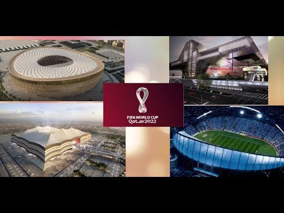

The 2022 FIFA World Cup will not only be the first tournament to be held in the Arab region, but it will be the most compact tournament that allows fans to attend more than one match per day.
All stadiums, training facilities and fan areas are equipped with solar cooling technology to maintain a moderate temperature. Knowing that all stadiums are environmentally friendly with the possibility of controlling their temperature.
Qatar's population does not exceed 3 million, so the legacy of this tournament must be carefully managed, so the tournament organizers have pledged to build stadiums with standard elements that will be remodeled after the tournament to become a lasting legacy of the 2022 World Cup beyond Qatar's borders.
After the tournament, about 170,000 seats will be removed to be given to developing countries as assistance from Qatar to improve their sports infrastructure. Consequently, 22 new stadiums are expected to be constructed in developing countries, and this reconfiguration will leave Qatar with stadiums with a seating range Between 20,000 to 25,000 seats, which is considered appropriate for their local entertainment needs.

NEW: Oxford mathematical model predicts route to the men's FIFA World Cup ⚽🏆